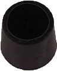
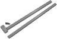

| Material: | ||||
| Clave | Material | Cantidad | Maletín | |
|
I-NT-000P7210-05C | 1 | E | |
|
I-NT-000P7230-01M | 1 | E | |
|
I-NT-000P7230-01K | 1 | E | |
| I-NT-000P7240-01C | 1 | E | ||
|  | I-NT-000P7240-01D | 2 | E | |
|
I-NT-000P7240-01A | 1 | E | |
|
I-AF-00041605-003 | 1 | E | |
| I-L3-00PR2220 | 1 | E | ||
|  | I-NT-000P1410-01F | 1 | E | |
| I-NT-000P7400-01C | 2 | F | ||
|
I-NT-000P7132-01A | Tubo de Plástico de 1 m | 1 | F |
|
I-NT-000P7240-01G | Varillas de soporte 50 cm x 1 cm | 1 | Almacén 1 |